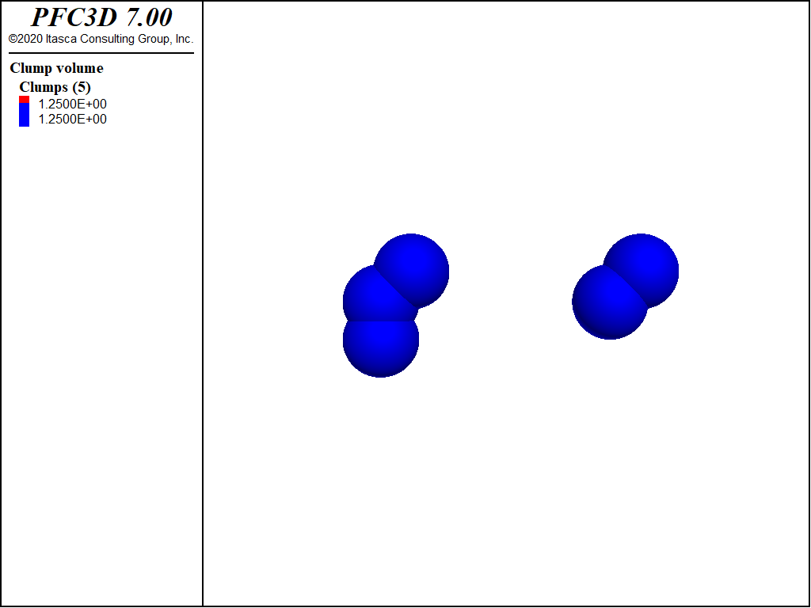
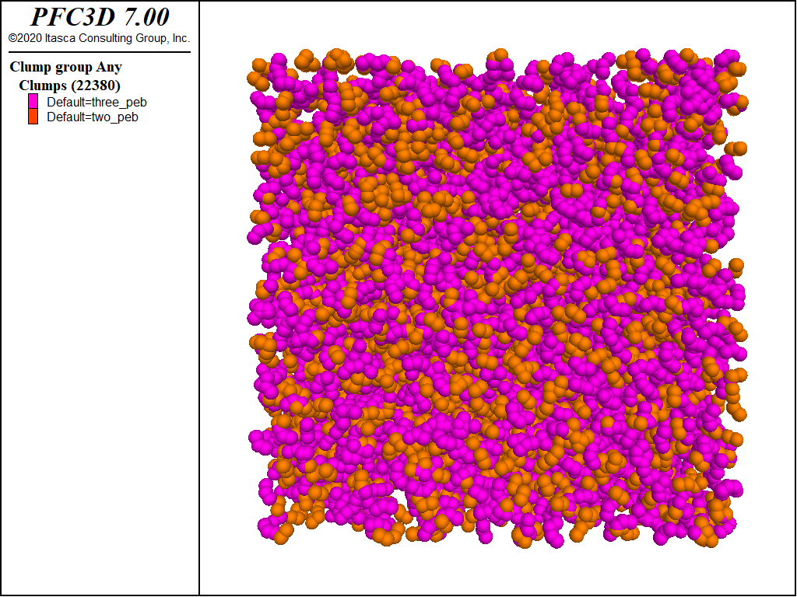
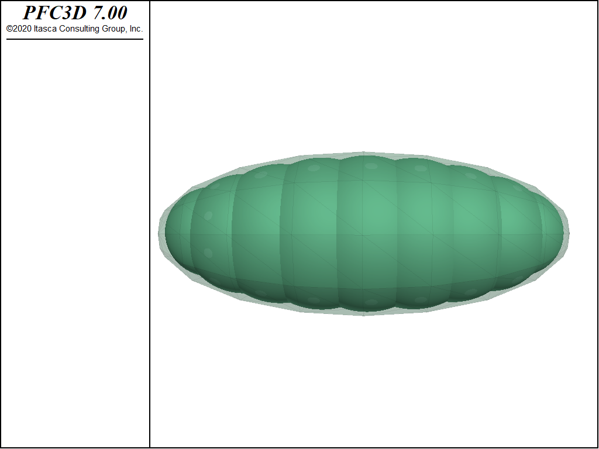
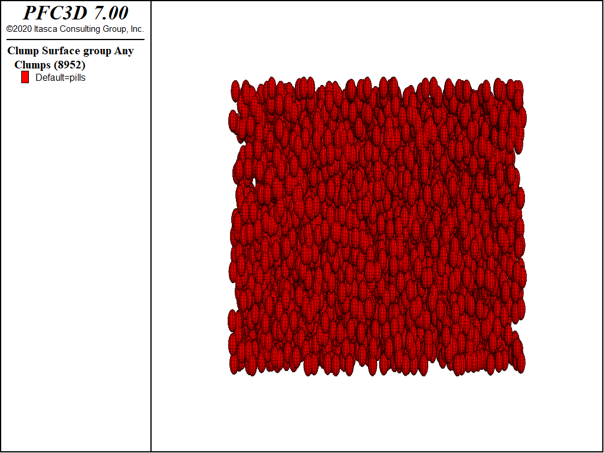
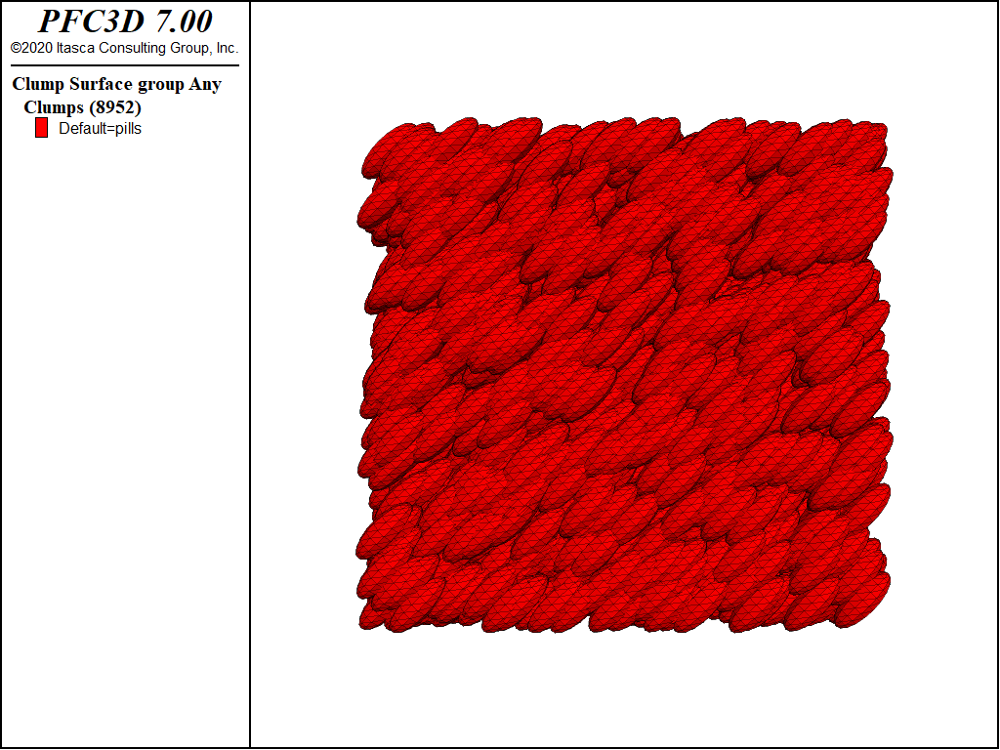

clump template 命令
语法
- clump template keyword ...
主要关键字：
对单个刚性团簇模板进行操作。刚性团簇模板是由子颗粒组成的刚性团簇的简化版本。 此外，刚性团簇模板可包含表面描述，用于计算惯性 参数和刚性团簇可视化。刚性团簇模板可创建、删除、导入和导出。刚性团簇模板 不是模型组件，而是可用于通过
clump replicate、clump generate或clump distribute命令创建刚性团簇。 引用刚性团簇模板的刚性团簇可通过其表面描述进行可视化。- create keyword ...
创建刚性团簇模板。创建时必须指定惯性属性。可直接指定这些属性 （即指定体积、惯性和位置），或指定根据子颗粒分布 （使用 pebcalculate 关键字）或根据表面描述（使用 surfcalculate 关键字）计算它们。 子颗粒可直接指定，也可通过 Taghavi（2011）的 Bubble Pack 算法自动指定。刚性团簇 及所有子颗粒均被平移，使刚性团簇形心与原点重合。原始刚性团簇位置 也会保留，可用于复制。
注意
假定刚性团簇模板具有单位密度，惯性必须反映该条件。
- bubblepack keyword ...
指定通过 Taghavi（2011）的 Bubble Pack 算法创建刚性团簇模板的子颗粒。 必须使用 geometry 关键字指定{二维中线性面片；三维中三角化曲面}， 且不能直接指定子颗粒。表面网格经过细化以提供最佳面片尺寸 （更多细节见 refinenum 关键字），并计算中轴 的近似值。中轴表示为与表面近乎 相切的一组{二维中圆；三维中球}。候选子颗粒是那些从子颗粒中心到表面的最近距离 大于子颗粒半径除以 搜索半径（frad） 的{二维中圆；三维中球}（搜索半径（frad） > 1.0）。 其余子颗粒根据其 摩擦比（fratio）（即刚性团簇中最小子颗粒与最大 子颗粒的比值，0 < 摩擦比（fratio） < 1）以及距离 距离系数（fdistance）（对应 Taghavi（2011）中定义的平滑度角度量，单位为度，0 < 距离系数（fdistance） < 180）进行过滤。算法首先 包含最大球。若球的半径与最大球半径之比高于 摩擦比（fratio），则该球可作为子颗粒包含在内。 参数 距离系数（fdistance） 描述重叠子颗粒之间的“距离”，其中 距离系数（fdistance） = 0 表示球仅在一个点接触（即不重叠）， 距离系数（fdistance） = 180 表示球仅在一个点接触且一个球包含在另一个球内 （即完全重叠）。 因此，距离系数（fdistance） 值越大，子颗粒越多，表面表示越平滑。若子颗粒 密度不足，可使用 refinenum 关键字。bubblepack 关键字不能与 pebbles 关键字同时给出。
- distance 距离系数（fdistance ）
距离 距离系数（fdistance），对应 Taghavi（2011）中定义的单位为度的平滑度角度量 0 < 距离系数（fdistance） < 180。距离系数（fdistance） 越大， 子颗粒分布越平滑。
- ratio 摩擦比（fratio ）
保存在刚性团簇模板中的最小子颗粒与最大子颗粒的比值，0 < 摩擦比（fratio） < 1。
- radfactor 搜索半径（frad ）
作为子颗粒考虑的半径系数。候选子颗粒是那些从子颗粒中心到表面的最近距离 大于子颗粒半径除以 搜索半径（frad） 的子颗粒（搜索半径（frad） > 1.0，且 搜索半径（frad） 默认值为 1.05）。 该参数控制子颗粒贴合表面的程度，系数越小，子颗粒与表面的重叠越少。
- calculate-pebbles 容差（ftol ）
该关键字指定将根据子颗粒分布、假定密度恒定来计算刚性团簇的位置、体积和惯性张量。包含刚性团簇的空间被递归细分为{二维中正方形；三维中立方体}盒子。完全位于任一子颗粒内的所有盒子的{二维中面积；三维中体积}和惯性张量被累加。使用平行轴定理累加惯性张量。每次迭代外推刚性团簇的“最终”尺寸，当满足以下任一条件时停止迭代：1) 待细分单元总数达到 1e6；2) 外推尺寸与估计尺寸之差在所需容差内。默认情况下，百分比差异 容差（ftol） = 0.01。允许的最小值为 0.00005，用户应注意，将百分比设置为如此小的值可能需要较大的计算量才能算出这些属性。计算得到的刚性团簇形心赋予刚性团簇。该命令不能与 inertia、position、surfcalculate、volume、x、y 或 z 关键字同时给出。
- calculate-surface
假定密度均匀，根据表面描述计算惯性属性。算法遍历所有面片，计算由面片顶点和原点构成的{二维中三角形；三维中四面体}的协方差，将该协方差累加到累加器中，并将协方差矩阵转换为惯性张量。二维中使用极惯性矩，即惯性张量的迹。算法详细说明见 惯性计算参考页面（http://number-none.com/blow/inertia/index.html）。该关键字不能与 inertia、pebcalculate、position、volume、x、y 或 z 关键字同时给出。
- geometry s
用作刚性团簇表面描述符的几何集名称。表面描述必须是封闭、可定向且流形的表面，由{二维中线段；三维中三角面片}组成。
- inertia 有限元 11（fe11 ）有限元 22（fe22 ）有限元 33（fe33 ）有限元 12（fe12 ）有限元 13（fe13 ）有限元 23（fe23 ）（二维中仅 1 个分量 ）
设置刚性团簇当前构型下的惯性“张量”。惯性张量的值为{二维中对应极惯性矩的浮点数；三维中二阶张量}。三维中必须按 e11、e22、e33、e12、e13、e23 的顺序指定 6 个参数，采用行/列约定。还必须指定体积，且该关键字不能与 pebcalculate 或 surfcalculate 关键字同时给出。
- name s
刚性团簇模板的给定名称。若未指定名称且未指定几何集，则赋予名称 块体模板 xx 分量（clumpTemplateXX），其中 XX 向（XX） 为刚性团簇模板 ID。若未指定名称但指定了几何集，则 s 为几何集名称。
- pebbles 模板编号（inumber ）搜索半径（frad ）位置矢量（vpos ）...
刚性团簇中的子颗粒数量 模板编号（inumber），其后为 模板编号（inumber） 组子颗粒几何参数。每组参数包括子颗粒半径（搜索半径（frad））和位置（浮点 x 向位置（fposx）、y 向位置系数（fposy） 和 正向峰值摩擦系数（fpoz））。不能与 bubblepack 关键字同时给出。
- position 正向峰值黏聚力（vcpos ）
刚性团簇位置，默认值为原点。该位置为刚性团簇形心的位置。该关键字不能与 pebcalculate 或 surfcalculate 关键字同时给出。
- position-x 浮点 x 向位置（fposx ）
位置的 x 分量，默认值为 0。该关键字不能与 pebcalculate 或 surfcalculate 关键字同时给出。
- position-y y 向位置系数（fposy ）
位置的 y 分量，默认值为 0。该关键字不能与 pebcalculate 或 surfcalculate 关键字同时给出。
- position-z z 向位置系数（fposz ）(3D ONLY)
位置的 z 分量，默认值为 0。该关键字不能与 pebcalculate 或 surfcalculate 关键字同时给出。
- volume 体积系数（fvol ）
将{二维中单位厚度体积；三维中体积}设置为 体积系数（fvol）。还必须指定惯性张量。该关键字不能与 pebcalculate 或 surfcalculate 关键字同时给出。
用法示例
可使用 clump template 命令创建刚性团簇模板以供后续使用。
简单示例
本例将生成两个刚性团簇模板。它们的子颗粒数量不同，但具有相同的惯性属性。
为此（另见 clump create 用法示例），先生成一个由三个子颗粒组成的刚性团簇模板，并使用 calculate 关键字计算其惯性属性。
model new
model domain extent -3.0 3.0
clump template create ...
calculate-pebble ...
name 'three_peb' ...
pebbles 3 ...
0.25 -0.55 0.0 0.6 ...
0.25 -0.75 0.0 0.15 ...
0.25 -0.75 0.0 0.4
随后创建第二个由两个子颗粒组成的刚性团簇模板，它继承前者的惯性属性。
fish define extract_values(c)
global volume = clump.template.vol(c)
global xx_in = clump.template.moi.xx(c)
global yy_in = clump.template.moi.yy(c)
global zz_in = clump.template.moi.zz(c)
global xy_in = clump.template.moi.xy(c)
global xz_in = clump.template.moi.xz(c)
global yz_in = clump.template.moi.yz(c)
global xpos = clump.template.origpos.x(c)
global ypos = clump.template.origpos.y(c)
global zpos = clump.template.origpos.z(c)
end
[cl=clump.template.find('three_peb')]
[extract_values(cl)]
clump template create ...
name 'two_peb' ...
volume [volume] ...
inertia [xx_in] [yy_in] [zz_in] [xy_in] [xz_in] [yz_in] ...
position [-xpos] [ypos] [zpos] ...
pebbles 2 ...
0.25 0.55 0.0 0.6 ...
0.25 0.75 0.0 0.4


图 1：由 clump template 命令创建的刚性团簇模板。两个刚性团簇被定义为具有相同的惯性属性（图中绘制了惯性体积），即使它们的几何形状不同。
最后使用 clump distribute 命令生成刚性团簇云。
clump distribute porosity 0.70 ...
resolution 1.0 ...
number-bins 2 ...
diameter ...
box -2.5 2.5 ...
bin 1 size 0.2 0.2 ...
volume-fraction 0.5 ...
group 'three_peb' ...
template 'three_peb' ...
az -90 90 ...
el -90 90 ...
tilt 0 0 ...
bin 2 size 0.2 0.2 ...
volume-fraction 0.5 ...
group 'two_peb' ...
template 'two_peb' ...
az -90 90 ...
el -90 90 ...
tilt 0 0


图 2：由所创建刚性团簇模板生成的刚性团簇云，包含两组刚性团簇。
从外部文件导入几何体
使用 clump template 命令的另一个有趣应用与 导入几何对象（geometry import） 命令相关，可导入刚性团簇的表面描述符。
此处导入一个 .stl 文件以创建“药丸”形刚性团簇模板。
model new
model domain extent -3.0 3.0
geometry import 'ellipsoid.stl'
clump template create name 'pill' ...
geometry 'ellipsoid' ...
calculate-surface bubblepack ratio 0.5 distance 150


图 3：使用 几何（geometry） 关键字创建的刚性团簇模板。
最后再次使用 clump distribute 命令，利用新创建的模板生成刚性团簇云。使用 azimuth、elevation 和 tilt 关键字创建一组竖向排列的药丸形刚性团簇。
clump distribute porosity 0.70 ...
resolution 1.0 ...
number-bins 1 ...
diameter ...
group 'pills' ...
box -2.5 2.5 ...
bin 1 size 0.2 0.2 ...
volume-fraction 1.0 ...
template 'pill' ...
az 0 0 ...
el 0 0 ...
tilt 0 0


图 4：“药丸”形刚性团簇云。
可使用 clump scale 命令调整刚性团簇尺寸。也可使用 clump rotate 命令修改其方位。
clump scale diameter 0.4
clump rotate axis (0,1,0) angle 45


图 5：调整尺寸并旋转后的刚性团簇。
| 这些内容对您有帮助吗？… | FLAC3D © 2019, Itasca | 原文更新于 2020 年 10 月 8 日 |